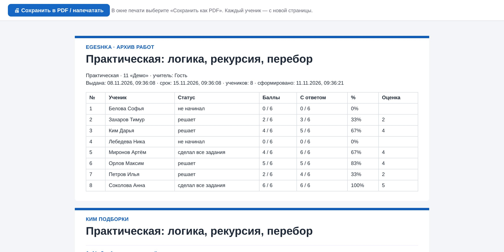

Инструкция
Как пользоваться сайтом — коротко и по шагам. Выберите, кто вы.
1Регистрация и вход
- Откройте сайт и нажмите «Я ученик».
- На вкладке «Регистрация» укажите фамилию и имя полностью, логин латиницей и пароль. Почта нужна, чтобы восстановить пароль.
- Если учитель дал код, ссылку или QR-код — впишите код (по ссылке он подставится сам). Тогда вы сразу окажетесь в его классе.
- В следующий раз входите на вкладке «Вход»: логин (или ФИО) и пароль.
Если указали почту, на неё придёт письмо со ссылкой — откройте её, чтобы подтвердить адрес. Заниматься можно сразу, но восстановить пароль получится только по подтверждённой почте.
За школьным компьютером вход временный: сайт не запомнит вас, а пароль не сохранится в браузере. Забыли пароль — «Забыли пароль?» в окне входа пришлёт ссылку на почту, или попросите учителя выдать новый.
2Главная: план на сегодня

- План на сегодня — 3–4 дела. Сайт сам подбирает номера, где больше всего ошибок, и добавляет задания учителя.
- Огонёк 🔥 горит, пока вы занимаетесь каждый день.
- Прогноз балла пересчитывается после каждого ответа: видно, какие номера тянут вниз.
- Все разделы — плитки внизу: тренажёр, вариант, курсы, лаборатория и другие.
3Тренажёр заданий

- Выберите номер (1–27) или нажмите «Решать» на главной.
- Введите ответ и нажмите «Проверить» — ответ проверяется сразу.
- Застряли — «Подсказка» (в два шага), потом разбор решения.
Сначала попробуйте решить сами: открытый ответ засчитывается как ошибка. Ошибки возвращаются через несколько дней на похожем задании — так тема закрепляется.
4Вариант ЕГЭ
27 заданий с таймером, как на экзамене; результат — первичный и тестовый балл. Кнопка «🖥 Как на КЕГЭ» открывает тот же вариант на экране, похожем на экзаменационную станцию: без меню сайта, номера вверху, ответ засчитывается только после «Сохранить ответ».
5Задания от учителя
- Подборки и контрольные учителя появляются в плане на сегодня и в разделе «Задания от учителя» — со сроком.
- Контрольная открывается на весь экран, одна попытка. Если выйти со вкладки, учитель это увидит.
- «Вместе» — учитель приглашает на занятие в одном окне: общий код и доска. Приглашение придёт само.
- МЦКО — тренировочные работы по типам диагностики МЦКО (10 класс, информатика). Работа появляется на плитке «МЦКО», когда учитель выдаст её классу: введите фамилию, имя и класс и начинайте. Ответ сохраняйте кнопкой; время идёт на сервере, по окончании работа сдастся сама.
6Курсы и лаборатория

- Курс ЕГЭ — уроки по всем 27 номерам: теория, разбор типов, программы и задачи.
- Курс Python — темы по порядку, задачи проверяются сразу.
- Лаборатория — пошаговый отладчик, модели, исправление ошибок в чужом коде, Arduino.
Курсы и лаборатории открываются по паролю, который даёт учитель. Введите его один раз.
7Инструменты у задания
- Python — запустите программу прямо рядом с условием; файлы к заданию уже рядом с кодом.
- Доска и калькулятор — для черновых расчётов.
- ★ Избранное и заметки — отметить задание и записать мысль.
- История — все ваши ответы; ошибки можно повторить.
8Дуэли, опыт и монеты
- За решения начисляются опыт (уровень) и монеты ₿.
- Дуэли — вызовите одноклассника: одни и те же задания, побеждает тот, кто решит больше и быстрее.
- Мой мир — магазин: монеты можно потратить на подарки и подарить их одноклассникам.
?Частые вопросы
Не вижу заданий учителя
Проверьте, что вы в классе учителя: войдите с кодом учителя или попросите его перенести вас в класс.
Сайт показывает старую версию
Обновите страницу с очисткой кеша: Ctrl+Shift+R (на Mac — Cmd+Shift+R).
Куда написать о проблеме?
Кнопка «Техподдержка» на сайте — ответ придёт туда же.
Хотите посмотреть ещё раз? На главной внизу — «Как работает Egeshka»: короткое знакомство и подсказки прямо на странице.
1Регистрация
- На главной странице нажмите «Я учитель»: ФИО, почта и пароль.
- На почту придёт письмо — откройте ссылку в нём, чтобы подтвердить адрес. После этого панель учителя откроется сама. Нет письма — проверьте «Спам» или нажмите «Отправить письмо ещё раз».
- Хотите сначала посмотреть — «Посмотреть панель учителя без регистрации»: демо-класс с вымышленными учениками.
2Класс и ученики

- Меню «Классы» → «Создать класс».
- Учеников можно загрузить списком из Excel и распечатать карточки входа с QR — каждый войдёт со своим паролем.
- Внутри класса — сводка недели (кто отстаёт, слабые номера), журнал и список учеников.
3Как позвать учеников
- Отправьте ссылку-приглашение или покажите QR-код на доске (кнопки на обзоре и в классе).
- Ученик регистрируется и попадает в ваш список. Новых учеников перенесите в класс: «Ученики» → «Без класса», отметьте и нажмите «Перенести в класс».
4Подборка за минуту

- «Создать подборку» → шаблон: «Вариант ЕГЭ», «10 заданий на номер» или «Работа над ошибками класса».
- Или выберите номер и отметьте задания из ленты.
- Выберите класс (или учеников), срок — и выдайте. Подборка появится у учеников в плане на сегодня.
5Контрольные и архив

- Тип «Контрольная»: на весь экран, одна попытка, уходы со вкладки и вставки из буфера видны вам.
- «Мои работы» — все выданные подборки; любую можно выдать снова другому классу.
- Архив в PDF — одним файлом: сводная таблица, задания с ответами и по каждому ученику его ответы, время и код.
- Arduino — вкладка с прогрессом учеников в лаборатории Arduino: сколько уроков пройдено в курсах 7 класса и 10–11 классов, по клику — каждый урок с шагами «теория · схема · запуск».
- МЦКО — вкладка с «Информатика · банк заданий»: 520 авторских заданий по типам диагностики МЦКО (13 номеров × 40 разновидностей). «🎲 Выдать случайный вариант» — каждому ученику свой набор; можно дать один вариант всем, задать время, попытки и срок. Ненужные задания отключаются галочкой, свои добавляются к любому номеру. Результаты — таблица по номерам и CSV. Это тренировка, а не официальный сервис МЦКО.
6Журнал, лента и отчёты

- Журнал — ответы каждого ученика, время и код программы; оценки по вашей шкале.
- Лента — ответы учеников в реальном времени.
- Итоги недели на почту по каждому классу и ссылка для родителей — только просмотр, без входа.
7Ещё возможности
- «Вместе» — занятие с учеником в одном окне: общий код и доска, ответ засчитывается ученику.
- «Решать как ученик» — открыть сайт глазами ученика.
- Подсказки ученикам — включить или выключить одной галочкой: «Настройки» → «Подсказки ученикам».
- Программирование — прогресс учеников в курсе Python; Дуэли — соревнования ваших учеников.
- Ученик забыл пароль — карточка ученика → «Новый пароль и карточка».
Экономикой, подарками, тиражами, паролями курсов и лабораторий управляет главный учитель сайта.
?Частые вопросы
Ученик зарегистрировался, но его нет в классе
Он зарегистрировался без кода. Откройте «Ученики» → «Без класса» и перенесите его в класс.
Закончился пробный период
Панель остаётся открытой только для просмотра. Нажмите «Продлить» вверху панели — там тарифы и контакты.
Панель показывает старую версию
Обновите страницу с очисткой кеша: Ctrl+Shift+R (на Mac — Cmd+Shift+R).
Короткое знакомство с подсказками по разделам — ссылка «Как работает панель» внизу меню панели.